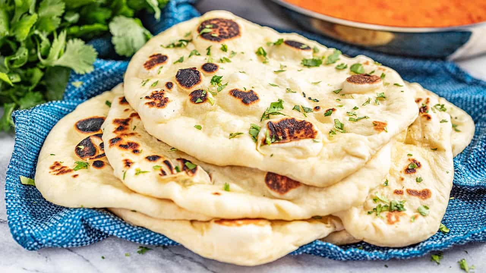

What is Naan Bread?
Naan bread is a leavened flatbread made with yogurt and olive oil, giving it a delicious tangy flavor. Light and crispy, this naan bread recipe pairs perfectly with many dishes. Use it as a sandwich wrap with Kofta or have it as a snack with some homemade tzatziki! It freezes well and is easily reheated in a toaster.
Ingredients
- 6 cups all purpose or bread flour
- 3 tablespoons sugar
- 1 tablespoon rapid-rise yeast
- 1 tablespoon salt
- 9 tablespoons full fat Greek yogurt (Fage 5% is recommended)
- 6 tablespoons extra virgin olive oil
- 2-1/4 cups warm water
Instructions
- Combine your flour, sugar, yeast, and salt in a large mixing bowl.
- In a separate mixing bowl, combine your yogurt, olive oil, and warmed water.
- Combine the yogurt/water mixture with your flour mix using a fork. Once the dough begins to combine, knead it until all the flour is combined with the dough.
- Cover the bowl (I use a disposable shower cap for this purpose), and let the dough rise for 1 to 1.5 hours, or until doubled in size.
- Once your dough has risen, dust a work surface with flour. Use your fingers to separate the dough from the walls of the mixing bowl, and roll the dough out and onto the floured surface.
- Stretch the dough into a rectangle, though don't worry about stretching it out thin yet. Use a pizza cutter to cut the dough into pieces of roughly equal size.
- Heat a fry pan or two on high heat,and begin stretching out your pieces of dough into pita bread sized pieces.
- Flour both sides of your stretched dough, pan bake each side of the dough until browned, and place each finished piece on a cooling rack. Do not stack the pieces of naan on top of each other until cooled as the steam from the cooked pieces will saturate each other and ruin the crispy, dry outside.
- Repeat the stretch and bake process for each piece of dough. When done, enjoy your fresh naan with some tzatziki or hummus, or freeze them in a freezer bag and reheat in a toaster when needed!